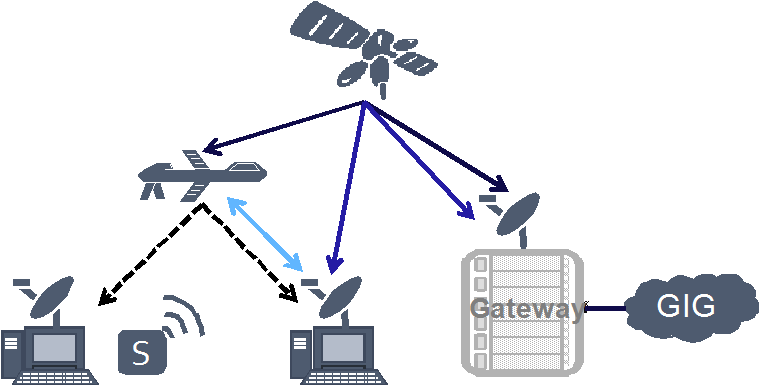
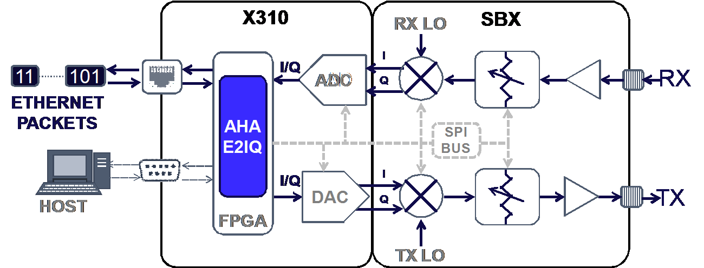
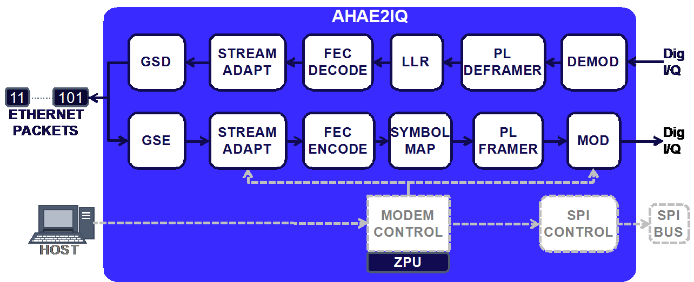
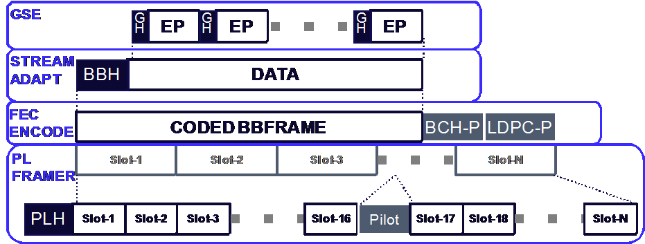

DVB-S2X Modem Prototype
Authors：Juan D. Deaton, Brian A. Banister, Tom Hansen, Tony Summers, Adam Bacon, Tim Halvorson, Ryan Hoffman
Institution：AHA Products Group – Comtech EF Data
Ettus Research Product Used：X310，SBX
Challenge：Create a working prototype of a DVB-S2X modem.
Introduction
With the increase in additional surveillance capabilities, and battle-fronts to monitor and defend, Command, Control, Communications, Computers, Intelligence, Surveillance and Reconnaissance (C4ISR) has become proportionally more dependent on SATellite COMmunication (SATCOM). Consequently, commercial SATCOM provides 80% of the Department of Defense (DoD)'s total capacity [1]. To this end, High Throughput Satellite (HTS) SATCOM has become a key interest. Ratified in October of 2014, Digital Video Broadcast-Satellite Second Generation Extension (DVB-S2X) offers a next generation increase in capacity and spectral efficiency [2]. Although DVB-S2X standard is targeted for satellite communications, it can support other C4ISR links such as bent pipe and direct connections with airborne assets. Figure 1 shows examples of C4ISR communications links suitable for DVB-S2X.
Figure 1: DVB-SX increases spectral efficiency for point-to-point applications in C4ISR communications
To demonstrate the performance benefits of DVB-S2X, we implement our design of the DVB-S2X standard, the 4709 E2IQ Core, on the Ettus X310 [3] Software Defined Radio (SDR). Using this SDR platform and our E2IQ Core, we show performance of a real modem in the Additive White Gaussian Noise (AWGN) channel. To the best of our knowledge, we are the first to implement the new DVB-S2X standard onto an SDR platform. Through these efforts, it is our objective to demonstrate to C4ISR users the flexible adaptability of using our E2IQ core in next generation systems.
Hardware Configuration
Our implementation is built using the Ettus X310 SDR platform [5] and the SBX-120 daughter board. A diagram showing our hardware configuration is captured in Figure 2.The SBX-120 daughter-board provides the RF front end, which includes the local oscillators, mixers and attenuators for the RX and TX paths. At the interface between the SBX-120 and X310, analog I/Q samples are processed in/out of the X310. On the Ettus X310, our design comprises the Xilinx Kintex-7 Field Programmable Gate Array (FPGA), Digital to Analog Converter (DAC), and Analog to Digital Converter (ADC). The core of our modem design, the E2IQ, is placed on the FPGA. Our host, via the Serial Peripheral Interface (SPI) bus, calibrates and configures the DAC, ADC, and the SBX-120 front end. For external data and control to the FPGA, we use the Ethernet and RS-232 interface, respectively.
Figure 2: Hardware block diagram of X310 and SBX-120 SDR.
Our E2IQ design comprises two main parts: the control and data flow. A block diagram of our E2IQ core is shown in Figure 3. Driven by the host, the purpose of the control flow is to configure and calibrate the encoder, modulator, and RF front end. The modem control block design is built on the Zylin CPU (ZPU), which is a small embedded processor. Leveraging the ZPU, the modem control block is able to perform algorithms required for ACM, gain control, and other real-time functions. To this end, the modem control block instructs the stream adaptation block which MODCOD to use for transmission. Additionally, modem control configures the modulation block to use the appropriate symbol rate. The stream adaptation block passes down MODCOD information to the subsequent modules to indicate block size, code rate, and modulation to use for the transmission. Finally, the center frequency and transmit power level may be configured via the SPI bus using a modem control algorithm or by the host.
Figure 3: Block diagram of our DVB-S2X implementation, E2IQ
The data flow paths transform the digital I/Q into Ethernet packets and vice-versa. A diagram showing the encapsulation of Ethernet packets to I/Q symbols is shown in Figure 4. For the Ethernet to I/Q or transmit flow, Ethernet packets are first received by the modem and framed using the Generic Stream Encapsulation (GSE) protocol [6]. The GSE packets are then framed with a Base Band (BB) header to indicate ACM control, roll-off factor, and other frame control information. The entire BB frame is sized according to the input block of the MODCOD, which is then passed along to the Forward Error Correction (FEC) encoder. To encode the BB frame, DVB-S2X uses an outer BCH code and with an inner LDPC code1. After encoding, the FEC frame is mapped to symbols and slots to be processed by the Physical Layer (PL) framer. Through its own header, the PL framer creates the start of frame followed by information used to decode the entire FEC frame. Additionally, the PL framer periodically inserts pilot slots for maintaining synchronization. As the PL processes each symbol, the data is then modulated into a digital I/Q signal and sent to the RF front end.
Figure 4: Illustration of framing from Ethernet Packets (EP) to I/Q symbols used by each functional block in the E2IQ core.
On the receive path, the demodulator, working with the PL deframer, looks for the start of the PL frame and the PL header to determine the MODCOD and the size of the slotted FEC frame. Signal measurements from detected symbols are then used as an input for the Log Likelihood Ratio (LLR) computation and subsequent decoding of the FEC frame. The stream adaptation block and GSE deframer blocks then remove the BB header and decapsulate back into Ethernet packets, respectively.
Performance Demonstration of the E2IQ and X310 Modem
To characterize performance of our DVB-S2X design we configure a single modem in a loop-back configuration for both the E2IQ FEC core and the Ettus SDR Platform. For performance characterization of the E2IQ core, we create an AWGN channel model on the FPGA and insert the channel between the FEC encoder and decoder core. A known pseudo-random number sequence is then generated and feed into the FEC encoder, which passes through the AWGN channel and back into the FEC decoder. When a statistically significant number of errors and associated data points for SNR values are performed, we calculate the 10-5 Block Error Rate (BLER) for all MODCOD [2].
Similar to the characterization of the E2IQ FEC core, the TX of our Ettus SDR is connected to a carrier-to-noise generator, which provides a programmable SNR to evaluate each MODCOD in the AWGN channel model. The RX path is returned to the same modem from the generator. In same way as the FEC characterization, the TX begins sending a known pseudo-random number sequence at incremental SNR values. From these experiments, the corresponding SNR at 10-5 BLER is determined. In our Ettus SDR design, we use the mid-range MODCODs for performance comparison. The results of the E2IQ core and the Ettus SDR implementation are shown in Figure 5.
Figure 5: Comparison of the E2IQ FEC core (dark blue) and the Ettus SDR implementation (magenta) with the DVB-S2X specification (light blue). Both implementations have small performance gaps over the range of tested MODCODs.
As shown in Figure 5, the performance gap between the E2IQ core and the DVB-S2X spec is small. On average, the E2IQ performance gap is 0.1 dB. On the SDR implementation, the average performance gap of 0.29 dB also tracks closely to the DVB-S2X spec. This demonstrates the high quality of the E2IQ core design and implementation on the Ettus SDR. Finally, the designed SDR, the maximum symbol rate and most spectral efficient MODCOD is 72 MSPS and 4.5 bits/s/Hz, i.e., a maximum data rate of 324 Mb/s.
Conclusion
Through our experiments and results, we have shown that the E2IQ core and X310 is a low loss implementation of the DVB-S2X specification. Additionally, given that the Ettus SDR is a multi-purpose platform, the E2IQ core is flexible can be adapted effectively to create a high performance data modem for variety of C4ISR applications. From our performance demonstration, we have shown that C4ISR applications can leverage DVB-S2X advances for increases in operating range and throughput.
References
[1] R. Lober, "Why the military needs commercial satellite technology," Defense One, September 2013.
[2] Digital Video Broadcasting, "Part 2: DVB-S2 Extensions (DVB-S2X)," ETSI EN 302 307-2, October 2014.
[3] National Instruments, "Ettus Research Releases Software Defined Radio Platforms Featuring Kintex-7 FPGA," Press Release, February 2014.
[4] AHA Products Group, "DVB-S2X Digital Ethernet Modem IP Core," AHA4709E2IQ Product Brief, April 2015.
[5] Ettus Research, "USRPTM X300 and X310 X Series," Product Specification, 2014.
[6] Digital Video Broadcasting, "Digital Video Broadcasting (DVB); Generic Stream Encapsulation (GSE) Protocol," ETSI TS 102 606, October 2007.